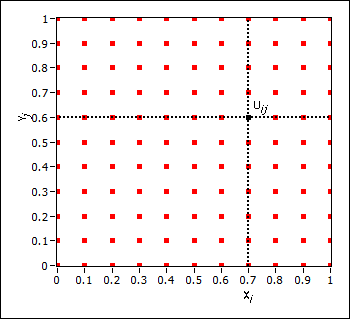
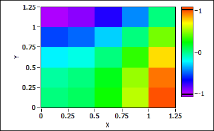

You can use the finite difference method to solve the following Laplace equation with the following domain and conditions:
The unit squared defines the equation and the boundary defines the Dirichlet condition. Use the following steps to solve the equation numerically with the finite difference method.
Step One
Separate the square domain with the uniform mesh grid of {x0, x1, ..., xn} x {y0, y1, ..., yn} where x0 and y0 are 0 and xn and yn are 1. You can evaluate the value of the unknown function on discrete boundary points with the Dirichlet condition.
The following figure shows the mesh grid when n is 10.

Step Two
Approximate the Laplace equation by the second order central difference scheme. The Laplace equation becomes

or
where uij denotes the value of u on point (xi, yj). The second formula is also known as the five-point formula because it is a linear combination of the values of u evaluated on five points.
Step Three
Formulate the Laplace equation by combining all difference equations of uij. Because the boundary condition specifies the values of u on the boundary, you can move the values to the right side of the equation, which generates this side of the equation. If the condition is Neumann, approximate the value of u on the boundary with its normal derivative.
When n is 4, you have the following 9-by-9 linear equation:
 |
Note Only the nine internal points are the unknown values. |
Step Four
Solve the 9-by-9 linear equation to get the approximate solution of the Laplace equation on a mesh grid, shown as follows.

The coefficient matrix of the linear equation, which you deduce on a uniform mesh grid from the PDE, has a special structure, such as the tri-diagonal or banded tri-diagonal structures. A compact storage scheme always stores the coefficient matrix, meaning you can use fast solvers for the linear equation with the structured coefficient matrix.